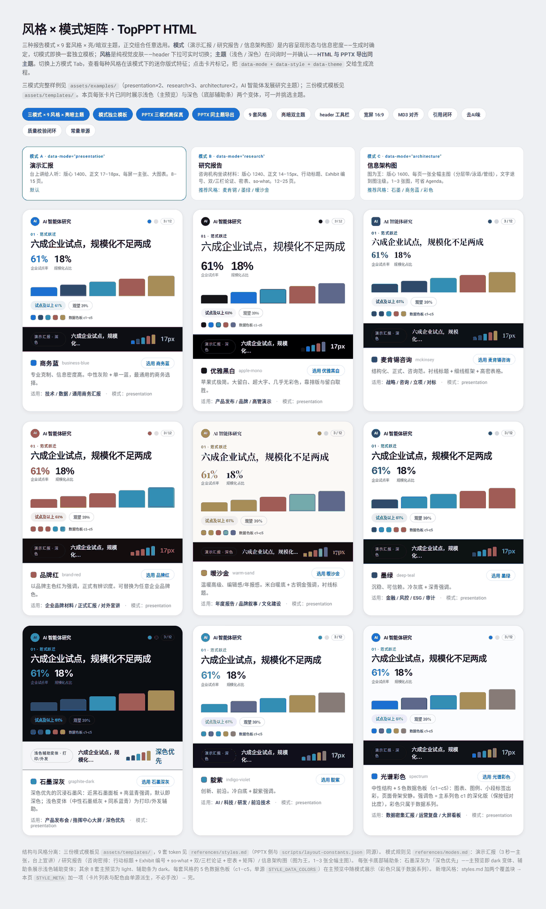
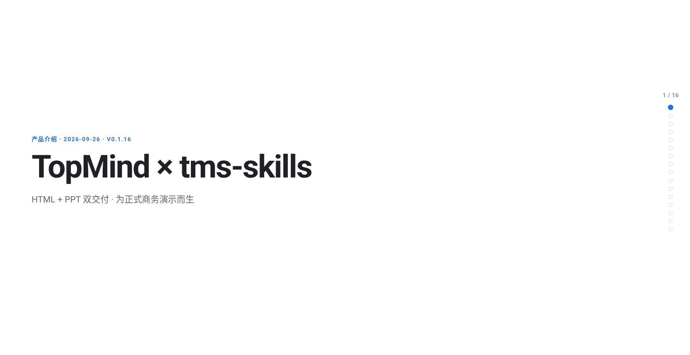
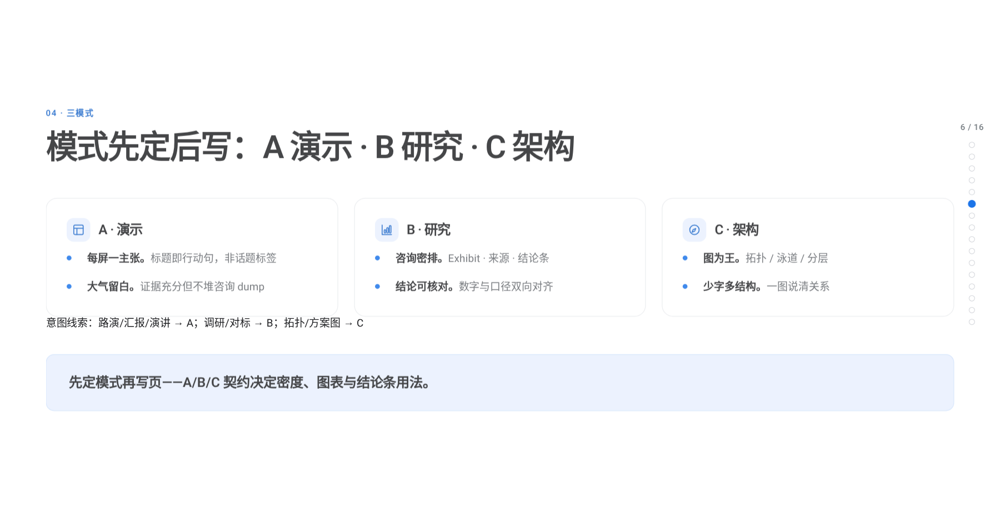
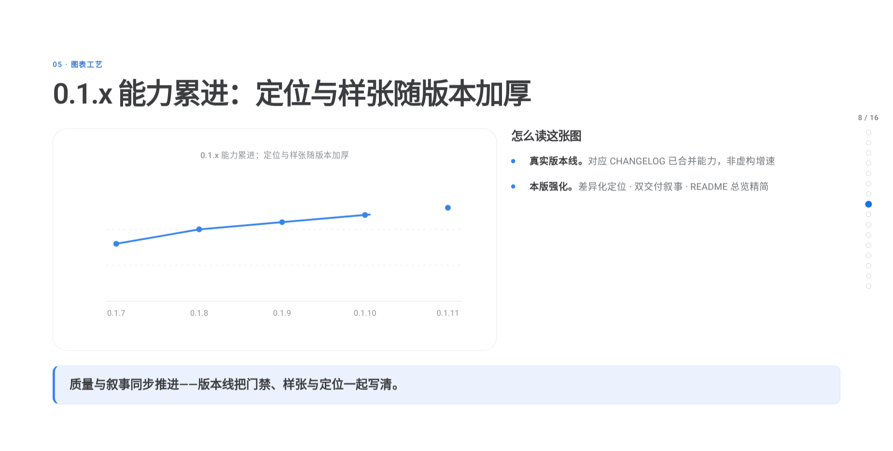

TopMindspace · Agent Skills
tms-skills / top-ppt-html
HTML + PPT 双交付，为正式商务演示而生：日常用可翻页 HTML 等同幻灯片，需要时再导出高保真可编辑 PPTX。参考 MD3——合适信息密度、克制表达。三模式 × 九风格 · Showcase 含多样图表与 Header 工具栏（T/P/H/F/B）· strict 0/0。
主题总览（Gate 0）

theme-overview-*.png产品 Showcase 样张


